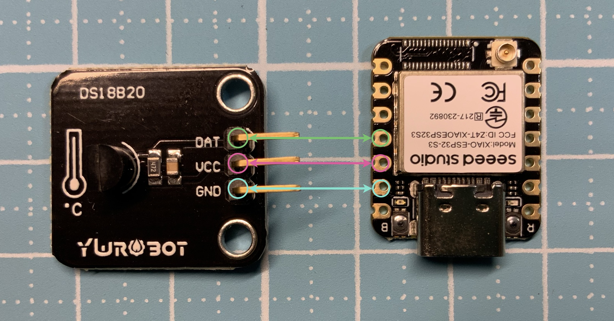

圖片來源：
Seeed Studio 官方文件
DS18B20 是一個數位溫度感測器，透過 1-Wire 單線通訊方式讀取溫度。
I/O 腳位接線：

以下程式碼可直接在 Thonny 上執行，讀取 DS18B20 溫度一次。
from machine import Pin # 匯入 Pin 類別
import onewire, ds18x20 # 匯入 1-Wire 與 DS18X20 模組
import time # 匯入時間模組
# === 建立單線通訊腳位 ===
dat = Pin(9, Pin.IN, Pin.PULL_UP) # DATA 腳位接 GPIO9，內部上拉
# === 建立 OneWire 與 DS18B20 物件 ===
ow = onewire.OneWire(dat) # 初始化 1-Wire
ds = ds18x20.DS18X20(ow) # 初始化 DS18B20
# === 掃描總線上的感測器 ===
roms = ds.scan() # 回傳感測器列表
print("找到 DS18B20:", roms) # 顯示找到的感測器
# === 判斷是否有感測器 ===
if not roms:
print("❌ 沒有偵測到 DS18B20，請檢查接線與 4.7kΩ 上拉電阻")
else:
ds.convert_temp() # 發送溫度轉換命令
time.sleep_ms(750) # 等待轉換完成（約 750ms）
# === 讀取每個感測器的溫度 ===
for rom in roms:
temp = ds.read_temp(rom) # 讀取溫度（°C）
print("🌡 溫度:", temp, "°C") # 顯示結果